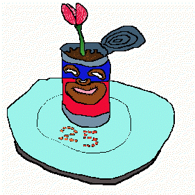

"Mr. Tim, what have you been up to all fall?"
"This I should ask you, Sunshine! But I don't want to tell so I don't want to know."
"That bad?"
"Naw. Just a long story. Have you ever dealt with liquid before?"
A shrug.
"Okay, this is how it gets passed."
I take a perfume tester, almost empty and with the little cap screwed on tight. "The simple imperative is to remain holding for a full three-count after the recipient has already affirmed possession. If you're at all apprehensive, signal to start over."
She cups her hands beneath mine as if to receive liquid without the vial. When I place the prop she folds her palms over my fingers. Doesn't let go. Holds and her lips move noiselessly, prayerfully. Then takes the vial. She'll do fine.
"If you're not careful, it may shatter and spatter on your face or hands. Transdermal absorption can be more potent than measured doses."
"Why do they keep it in glass, then?"
"That's how we get it from Stark: black so as to prevent exposure to light, but glass to keep out seepage of air."
"I can't wait to meet him."
"You seem so different, Sunshine."
"It's been a while. Trips changed me."
"It's true."